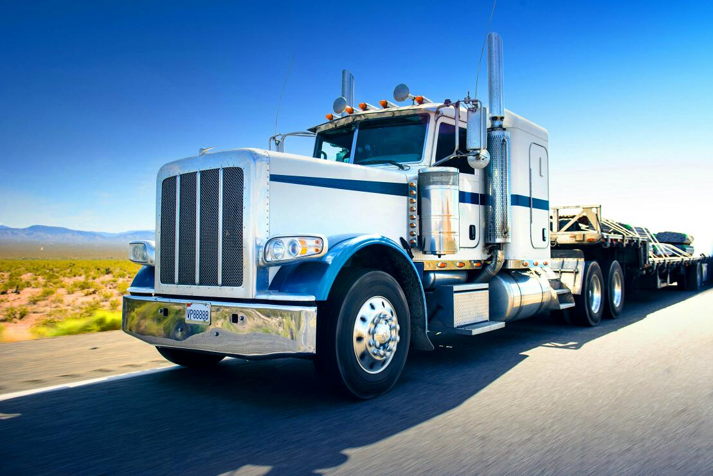

This company is aimed at offering transportation services for its client till to the final destination in a formulated protocol so as to ensure ideal services are offered.
The company is celebrating 20th anniversary since its existence. It has served its clients promptly since before hence its positive outlook.
We have various machinery that facilitate our services, this includes: trucks folklifts cranes also conveyors. We work with heavy duty machinery to ensure durability as well as efficiency.
The truks are of different types concerning on the related transport activity. Those for long distances and short distances are available.
Under this system, trucks are either
classified in the N2 category (weighing
more than 3.5 tonnes) or N3 (weighing
more than 16 tonnes). N3 vehicles are
also referred to as ‘heavy trucks’ or ‘heavy
commercial vehicles’.
The end-use of trucks varies widely – they
may for instance be used for long-haul or
regional delivery, for construction or for
municipality use.
Depending on their mission, most trucks
are custom-built on an individual basis,
often in a multi-stage process, in order
to meet specific requirements.
They can
vary from the number of axles to the size
of the engine, fuel tank or cab, to the height
of the chassis.
When taking the complete vehicle into
account – a rigid body or a tractor plus
a trailer – the truck market becomes
even more complex. There are literally
thousands of shapes and sizes of trucks.
All Right Agencies trucks are of different variety. They are classified according the intended purpose.
Those which are tasked in both extensive and intensive load transportation are available. on the other hand those for transporting non bulky goods are available and are characterised with high speed due to their impuldse. a variety of trucks performe different tasks in various levels. for example a scania 24 wheel truck is ideal in transporting bulk goods and over a long distance due to its engine capacity. Also the merceedes , Foton and volvo trucks are ideal for long distance and bulk transportation.
This agency also provide security to the transported goods to cover buglarity. In case of any misconduct encontered a certain protocol provided by the company is to be followed in order to ensure clients concerns are worked on.
If by any chance client's request is not worked on the company provides a way of submitting their views.The prime focus is to ensure the best and quality services are offered to our customers to ensure accountability. Our staff ensure everything is followed and acted upon.
since our existence null complains have been recieved from our potential clientsand this brings out a vast difference from other firms.